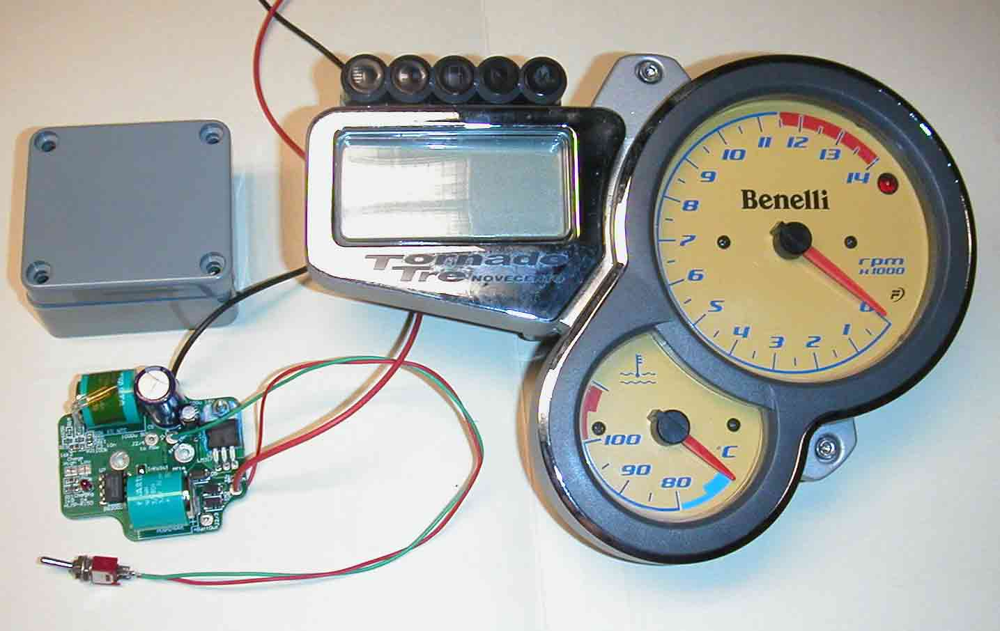
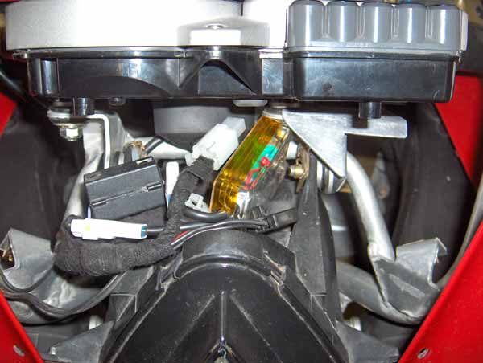
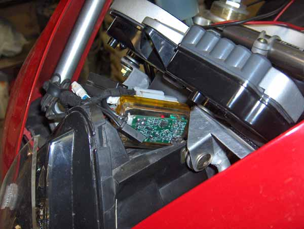

Revision 6 - Ready to release into the wild
So here it is .... finally.
The concept has been working since Jul 2007 (11 months).
This revision has been running since the end of March 2008.
The installation, documented HERE, was done on Paul Copely's
(formerly Baz Turel's) Tornado. I appreciate his patience, and trust. It's not easy watching someone
pull your baby apart, and cut it up.
If you are interested in fixing your resetting clocks, contact Engenia.
History .....
Revision 3

Tornado UPS: The third attempt at fixing the Tornado's resetting clocks. (23 January 2006)
The red & black wires at the top come from the battery, The switch in the foreground mimics the Main Switch.
The connection to the dash is not shown.
The circuit works by monitoring the battery voltage, and switching the dash to a low power state when the
voltage drops below 7V. At this point, the backup NiMh cells supply the dash with power. When the main
battery voltage rises above the backup battery voltage, it resumes supply. When the voltage is above 8V,
the dash is automatically switched back on.
This circuit will allow the removal of the main battery for several minutes, without the clock,
trip meter or lap timer resetting.
|  |  |
The prototype is housed in a plastic case so that I can open it up and make changes as needed. The final product will be potted, and slightly smaller still.
Both pictures show the circuit charging it's internal batteries. You can see a red LED illuminated.
In it's current incarnation, there are 3 wires that need to be spliced from the loom. You can see the additional
3 pin connectors - white with blue end seals.
I may be able to fit it into the dash itself, but it will be a tight squeeze, and a very unusually shaped board.
If there's sufficient interest, I'll persue it, but what you see was the easiest way to get something working.
The circuit is essentially the same as that developed a year ago. It's just been miniaturised. If necessary, it could be reduced by, perhaps, another 50%, but I'd need some convincing!
There has been a fundamental flaw in my thinking up to just recently. The circuit above worked flawlessly
on the bench, but only intermittently on the bike. It turns out, that if the UPS is only called on to
operate once, then allowed to re-charge, everything works fine. But if it must back up the battery without
being allowed to re-charge, it can not supply the required charge, and the dash resets.
Clearly, I needed to run ALL of the dash facilities on the bench, to mimic the real situation. I was assuming
that the additional lights and sensors would consume little power. I was wrong.
In an attempt to miniaturise the UPS, I had made it too small to work properly. So I went back to the drawing
board, and reduced the problem to it's most basic. I decided to do away with recharging for the moment
and use a much larger battery that would not require it (for a while). I connected a series of 8 AA Alkaline
cells, to make a 12V battery - just below the main battery voltage. The negative side I connected to
ground. I then connected the dash battery supply to the main battery positive, through a diode. The dash
battery supply was also taken to my backup battery positive, through another diode. In this way, while the
main battery voltage is above the backup voltege, the main battery will supply the dash power. If the main
battery voltage falls below the backup voltage, the backup battery will supply the dash power.
This system has worked flawlessly now for 2 weeks. (The backup battery resides just above the ECU.) It even
survived me running the main battery dead flat, while attempting to start the bike on fouled plugs.
This proves that it can be done. It remains now to come up with a way of charging the AA's or change to Li-Ion
cells, or just replace primary (alkaline) cells, when a "Low Battery" light comes on.
In the mean time, I'll keep using the system with alkalines until they fail.
This one really does work! 5 months & no resets.
The In-Front-Of-Dash, primary cell solution...
When the battery voltage drops below the 9V PP cell voltage, the PP Cell takes over, to supply the dash, and
keep it alive. When the PP Cell terminal voltage dips below the trip voltage (6.3V < Vtrip < 6.9V ), the
condition is captured, and a LED is set flashing. The LED will stop flashing when it drains the PP Cell
completely, or the cell is replaced, and the circuit reset, whichever comes first. If y9ou choose not the
replace the cell, the UPS will cease to function when the cell voltage reaches about 5.5V.
The LED can be see just above the dash, as you sit astride the bike. It's bright. You won't miss it.
The installation documented HERE,